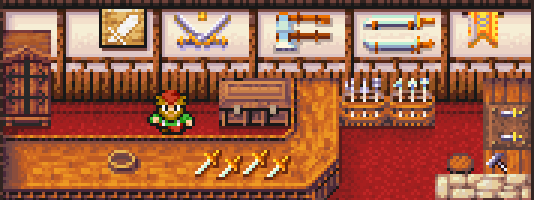
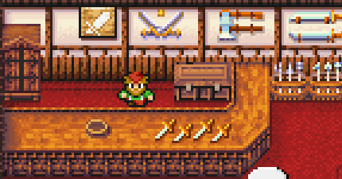
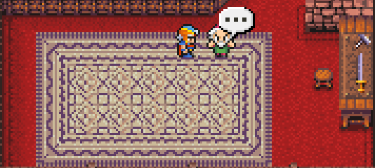
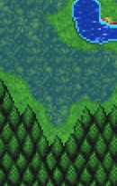
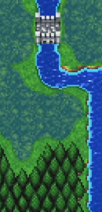
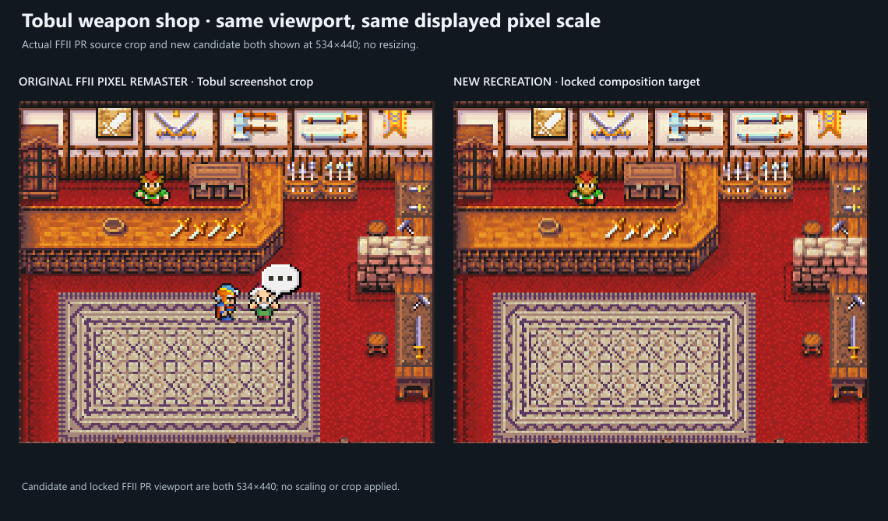
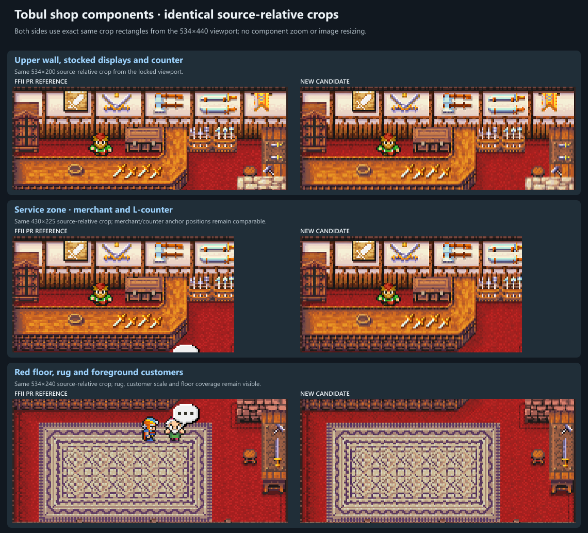
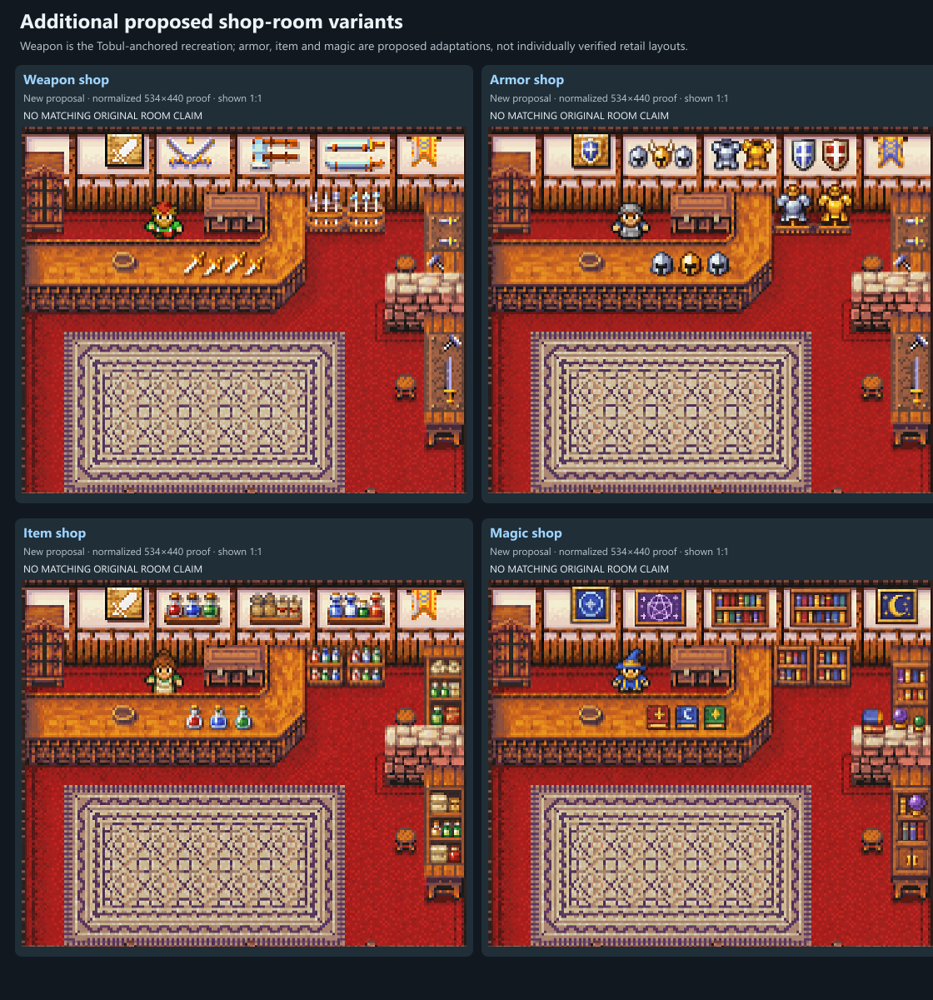
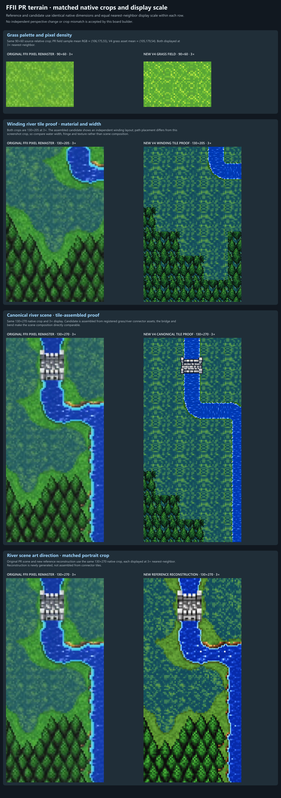

Same viewport coordinates, no resize.
This is a reference-only review package for the PaletteDensityPassV2. It preserves actual source images, measured crops, and comparison generators. Source references remain separate from candidate art.
Shop comparisons use the locked 534×440 viewport and matched source-relative component crops. Terrain comparisons show four matched native-size rows: grass, a winding tile proof, the canonical tile-assembled scene, and a separate generated reconstruction.
The crop is from Vorxu's 960×540 PR Tobul capture at source rect (213,0,534,440). Pixel runs and composition notes are in README.md; source/crop hashes are in source-manifest.json and reference-crop-manifest.json.


Same viewport coordinates, no resize.

Merchant, stock and counter; same viewport coordinates.

Rug, red floor and customers; same screenshot scale.
Clear grass patch from a 640×360 Altair-to-Gatrea route frame.

Natural composition with thin green/earth banks; no junction atlas.

Copied byte-for-byte from the earlier attributed FFII PR reference crop; crop provenance and hash are in the manifests.
The source and normalized weapon-shop recreation below are both shown at 534×440 with no scaling or crop. The FFII PR screenshot includes two foreground customers and a dialogue bubble; the static recreation intentionally omits those transient elements. This compares the room composition and components, not an identical gameplay screenshot.


Component detail board: six matched source-relative comparisons for the wall bay, red floor, rug, chest, racks and L-counter (each pair uses the same nearest-neighbor enlargement factor).
Related production components: wall · floor · rug · chest · racks · counter
Armor, item, and magic rooms are proposals using the same composition template. No matching original-room screenshots were available in this review set, so these are not labeled as retail-layout comparisons.

Proof snapshot hashes: store proof manifest. Builder: store variant board generator.
Four terrain pairs are compared at identical native crop dimensions and equal nearest-neighbor scale per row. The winding tile proof uses a different path placement, so read it for water width/material only; the canonical tile proof has the matched bridge-and-bend scene. The woodland ground is closer in overall PR palette but still shows a more regular rectangular pattern; river width/bend reads broadly similar and water highlights repeat more visibly. The separate 130×270 art-direction reconstruction uses the same PR crop but is newly generated review art, not connector-tile assembly; its rim is thinner than the rejected first pass and its olive banks brighter than the capture. The superseded cyan-edge pass is retained in iterations. Full visual notes and hashes are in the README and terrain proof manifest.

Normalized reconstruction provenance: proof provenance.
See Tobul board generator, store gallery generator, and terrain board generator.